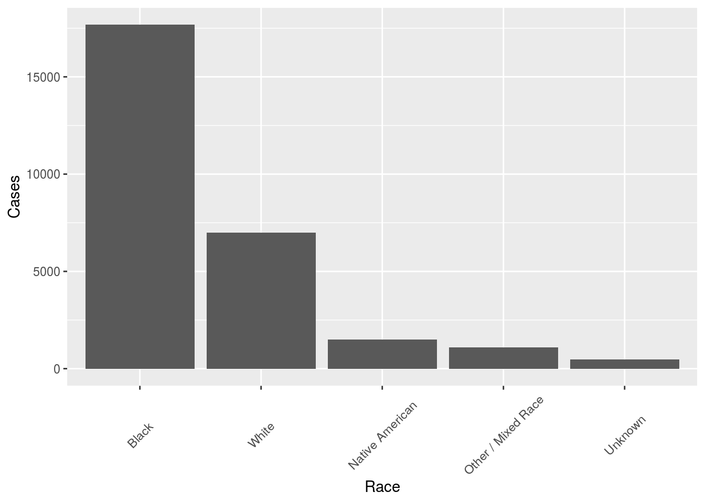
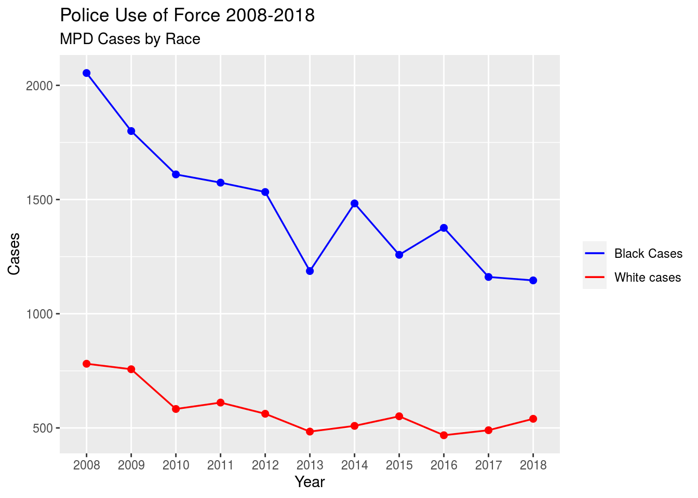
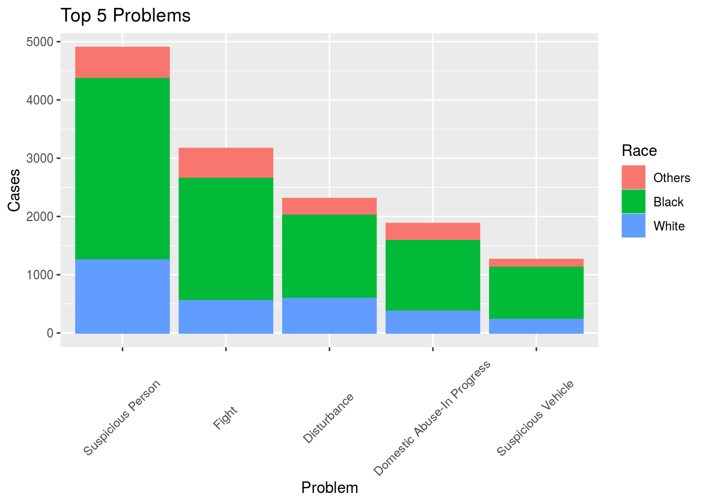
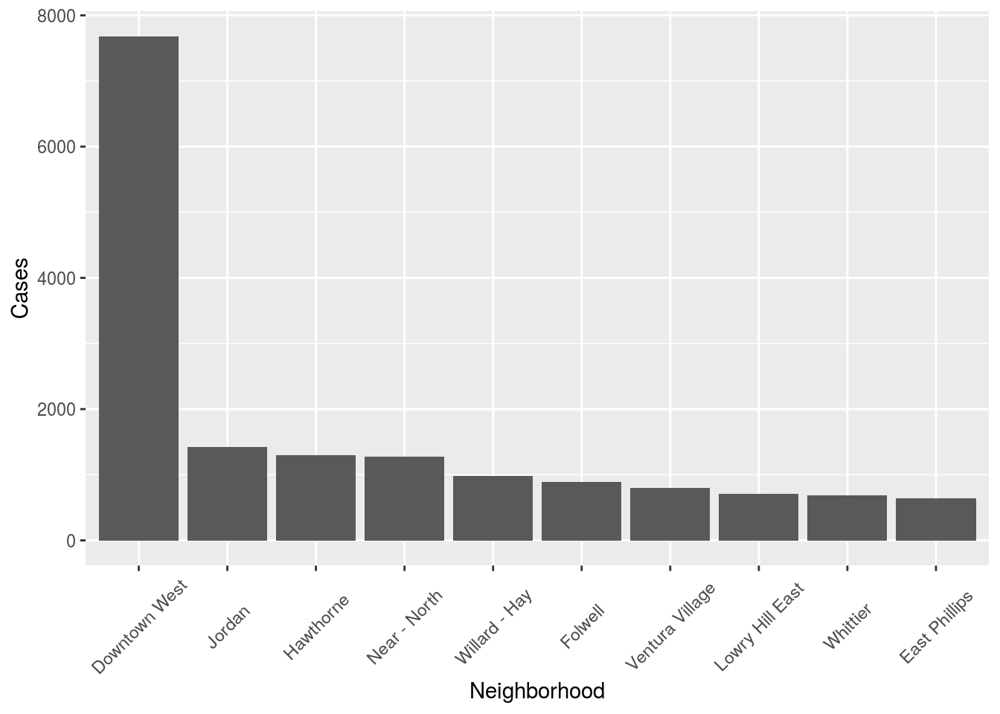
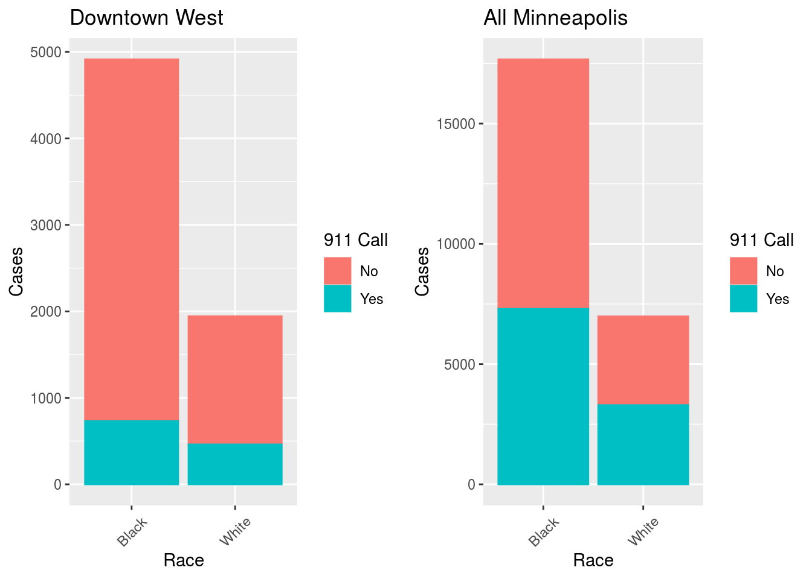
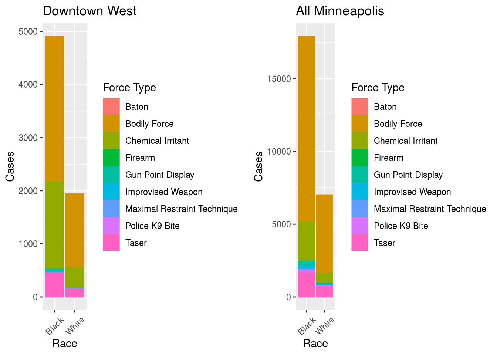
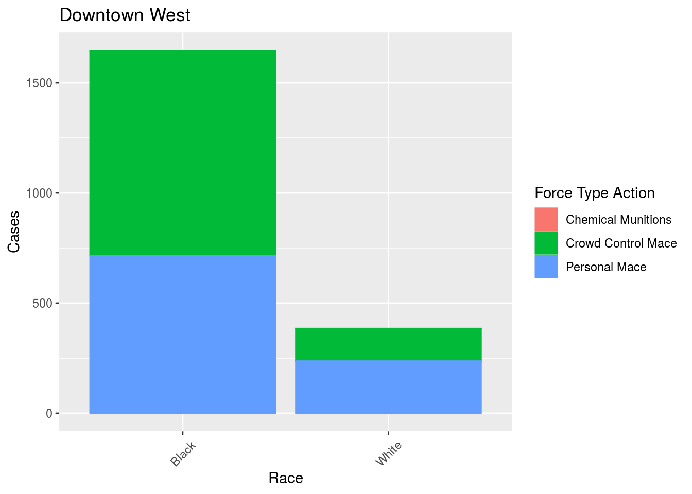

multiplot <- function(..., plotlist=NULL, file, cols=1, layout=NULL) {
library(grid)
# Make a list from the ... arguments and plotlist
plots <- c(list(...), plotlist)
numPlots = length(plots)
# If layout is NULL, then use 'cols' to determine layout
if (is.null(layout)) {
# Make the panel
# ncol: Number of columns of plots
# nrow: Number of rows needed, calculated from # of cols
layout <- matrix(seq(1, cols * ceiling(numPlots/cols)),
ncol = cols, nrow = ceiling(numPlots/cols))
}
if (numPlots==1) {
print(plots[[1]])
} else {
# Set up the page
grid.newpage()
pushViewport(viewport(layout = grid.layout(nrow(layout), ncol(layout))))
# Make each plot, in the correct location
for (i in 1:numPlots) {
# Get the i,j matrix positions of the regions that contain this subplot
matchidx <- as.data.frame(which(layout == i, arr.ind = TRUE))
print(plots[[i]], vp = viewport(layout.pos.row = matchidx$row,
layout.pos.col = matchidx$col))
}
}
}Police brutality has long been an issue in the United States. The recent killing of George Floyd has again cast a spotlight on policing practices in America. We decided to study data on the use of force by police in Minneapolis. Breaking it down by race over the entire data set we have the following bar chart.
police %>%
drop_na() %>%
group_by(Race) %>%
summarize(n=n()) %>%
arrange(desc(n)) %>%
slice(1:5) %>%
ggplot() +
geom_col(aes(x = reorder(Race, -n), y = n)) +
theme(axis.text.x = element_text(angle = 45, vjust = .5)) +
labs(x = "Race", y = "Cases")
Bear in mind that only 19.4% of the population of Minneapolis is black 1, which means that police use force against black people at over 8 times the rate they use it against white people. In the following plot, we compare the annual numbers of use-of-force cases for black and white people in Minneapolis.
police_nested =
police %>%
mutate(ResponseYr = substr(ResponseDate, 1, 4)) %>%
group_by(ResponseYr) %>%
nest()
police_nested = police_nested[1:11,]
Year <-police_nested$ResponseYr
total_yr <- data.frame(Yr = Year , Cases = 0, Black_cases = 0, White_cases = 0)
for (i in 1:11) {
total_yr[i,2] =
police_nested$data[[i]] %>%
summarise(n = n())
total_yr[i,3] =
police_nested$data[[i]] %>%
filter(Race == "Black") %>%
summarise(n = n())
total_yr[i,4] =
police_nested$data[[i]] %>%
filter(Race == "White") %>%
summarise(n = n())
}
ggplot(data = total_yr, mapping = aes(x=Year)) +
geom_line(aes(y = Black_cases, color="Black Cases"), group = 1, size=0.6) +
geom_line(aes(y = White_cases, color="White cases"),group = 1, size=0.6) +
scale_colour_manual("",
breaks = c("Black Cases", "White cases"),
values = c("Blue","Red")) +
geom_point(aes(y = White_cases), color="Red", size=2) +
geom_point(aes(y = Black_cases), size=2,color="Blue") +
xlab("Year") + ylab("Cases") +
ggtitle("Police Use of Force 2008-2018", "MPD Cases by Race")
When we examine the stated reasons for these altercations, we see that the top category–suspicious person–disproportionately includes black people.
police %>%
group_by(Problem, Race) %>%
summarize(n=n()) %>%
mutate(sum=sum(n)) %>%
arrange(desc(sum)) %>% filter(sum>1260) %>%
mutate(Race=fct_collapse(Race, Others=c("Asian", "not recorded", "Other / Mixed Race", "Unknown", "Pacific Islander", "Native American"))) %>%
group_by(Problem, Race) %>%
summarize(n=sum(n)) %>%
mutate(sum=sum(n)) %>%
ggplot() +
geom_col(aes(x=reorder(Problem, -n), y=n, color=Race, fill=Race))+
theme(axis.text.x = element_text(angle = 45, vjust = .5)) +
labs(title="Top 5 Problems", x = "Problem", y="Cases")
All of this information about Minneapolis in general has been discussed extensively in the media since the murder of George Floyd. In particular, this NY Times article provides some great graphics about the use-of-force statistics for Minneapolis as a whole:
https://www.nytimes.com/interactive/2020/06/03/us/minneapolis-police-use-of-force.html
However, as the following barplot shows, these incidents are not spread evenly over the city. An enormous number of these police altercations take place in Minneapolis’s downtown district:
police %>%
group_by(Neighborhood) %>%
summarize(n=n()) %>%
arrange(desc(n)) %>%
slice(1:10) %>%
ggplot() +
geom_col(aes(x = reorder(Neighborhood, -n), y = n)) +
theme(axis.text.x = element_text(angle = 45, vjust = .5)) +
labs(x = "Neighborhood", y = "Cases")
Focusing on the Downtown West district shows some very distinct trends.
In this first plot we see that while 911 calls to the police result in use-of-force in similar numbers for black and white people, police are far more likely to use force against black people without being called in Downtown West. We compare this with the data for all Minneapolis.
p1 <-police %>%
filter(Neighborhood == "Downtown West", Race %in% c("Black", "White")) %>%
ggplot() +
geom_bar(aes(x = Race, color = Is911Call, fill = Is911Call)) +
theme(axis.text.x = element_text(angle = 45, vjust = .5)) +
labs(title = "Downtown West", x = "Race", y = "Cases", color = "911 Call", fill = "911 Call")
p2<- police %>%
drop_na() %>%
filter(Race %in% c("Black", "White"), Is911Call %in% c("No", "Yes")) %>%
ggplot() +
geom_bar(aes(x = Race, color = Is911Call, fill = Is911Call)) +
theme(axis.text.x = element_text(angle = 45, vjust = .5)) +
labs(title = "All Minneapolis", x = "Race", y = "Cases", color = "911 Call", fill = "911 Call")
multiplot(p1, p2,cols=2)
We can also see that the kinds of foce the police use are different for black and white people. In particular, the police are much more likely to use chemical irritants on black people than white people in Downtown West.
p3 <- police %>%
filter(Neighborhood == "Downtown West", Race %in% c("Black", "White"), ForceType %in% c("Baton", "Bodily Force", "Chemical Irritant", "Firearm", "Gun Point Display", "Improvised Weapon", "Maximal Restraint Technique", "Police K9 Bite", "Taser")) %>%
ggplot() +
geom_bar(aes(x = Race, color = ForceType, fill = ForceType)) +
theme(axis.text.x = element_text(angle = 45, vjust = .5)) +
labs(title = "Downtown West", x = "Race", y = "Cases", color = "Force Type", fill = "Force Type")
p4 <- police %>%
filter(Race %in% c("Black", "White"), ForceType %in% c("Baton", "Bodily Force", "Chemical Irritant", "Firearm", "Gun Point Display", "Improvised Weapon", "Maximal Restraint Technique", "Police K9 Bite", "Taser")) %>%
ggplot() +
geom_bar(aes(x = Race, color = ForceType, fill = ForceType)) +
theme(axis.text.x = element_text(angle = 45, vjust = .5)) +
labs(title = "All Minneapolis", x = "Race", y = "Cases", color = "Force Type", fill = "Force Type")
multiplot(p3, p4,cols=2)
Focusing in on chemical irritant use in Downtown West we have the following.
police %>%
filter(Neighborhood == "Downtown West", Race %in% c("Black", "White"), ForceType == "Chemical Irritant") %>%
ggplot() +
geom_bar(aes(x = Race, color = ForceTypeAction, fill = ForceTypeAction)) +
theme(axis.text.x = element_text(angle = 45, vjust = .5)) +
labs(title = "Downtown West", x = "Race", y = "Cases", color = "Force Type Action", fill = "Force Type Action")
So the police are more likely to use stronger crowd control mace on African Americans.
“U.S. Census website”. United States Census Bureau. July 1, 2019.↩